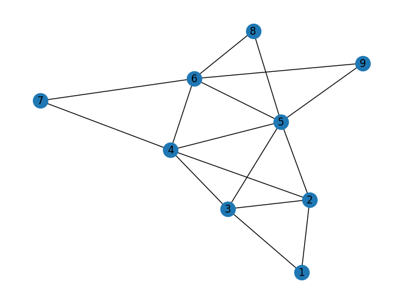

Tugas 4 (Graph)#
Import Library#
import pandas as pd
import networkx as nx
import matplotlib.pyplot as plt
Create Graph#
G = nx.Graph()
G.add_edges_from([(1,2),(1,3),(2,3),(2,4),(2,5),(3,4),(3,5),(4,5),(4,6),(4,7),(5,6),(5,8),(6,7),(6,8),(6,9),(9,5)])
nx.draw(G, with_labels=True)
plt.show()

Menghitung Degree Centrality#
nx.degree_centrality(G)
{1: 0.25,
2: 0.5,
3: 0.5,
4: 0.625,
5: 0.75,
6: 0.625,
7: 0.25,
8: 0.25,
9: 0.25}
Menghitung Closeness Centrality#
nx.closeness_centrality(G, u=None, distance=None, wf_improved=True)
{1: 0.4444444444444444,
2: 0.6666666666666666,
3: 0.6666666666666666,
4: 0.7272727272727273,
5: 0.8,
6: 0.6666666666666666,
7: 0.5333333333333333,
8: 0.5333333333333333,
9: 0.5333333333333333}
Menghitung Betweenness Centrality#
nx.betweenness_centrality(G)
{1: 0.0,
2: 0.10714285714285714,
3: 0.10714285714285714,
4: 0.17857142857142855,
5: 0.3214285714285714,
6: 0.14285714285714285,
7: 0.0,
8: 0.0,
9: 0.0}
Menghitung Load Centrality#
nx.load_centrality(G)
{1: 0.0,
2: 0.10714285714285714,
3: 0.10714285714285714,
4: 0.17857142857142855,
5: 0.3214285714285714,
6: 0.14285714285714285,
7: 0.0,
8: 0.0,
9: 0.0}
Menghitung Eigenvector Centrality#
nx.eigenvector_centrality(G)
{1: 0.17730815696453311,
2: 0.3602274223297987,
3: 0.3602274223297987,
4: 0.44090504709821254,
5: 0.4852657925541177,
6: 0.3830241519572661,
7: 0.20277487429516888,
8: 0.2136924487075301,
9: 0.2136924487075301}
Menghitung Google Matrix#
nx.google_matrix(G)
array([[0.01666667, 0.44166667, 0.44166667, 0.01666667, 0.01666667,
0.01666667, 0.01666667, 0.01666667, 0.01666667],
[0.22916667, 0.01666667, 0.22916667, 0.22916667, 0.22916667,
0.01666667, 0.01666667, 0.01666667, 0.01666667],
[0.22916667, 0.22916667, 0.01666667, 0.22916667, 0.22916667,
0.01666667, 0.01666667, 0.01666667, 0.01666667],
[0.01666667, 0.18666667, 0.18666667, 0.01666667, 0.18666667,
0.18666667, 0.18666667, 0.01666667, 0.01666667],
[0.01666667, 0.15833333, 0.15833333, 0.15833333, 0.01666667,
0.15833333, 0.01666667, 0.15833333, 0.15833333],
[0.01666667, 0.01666667, 0.01666667, 0.18666667, 0.18666667,
0.01666667, 0.18666667, 0.18666667, 0.18666667],
[0.01666667, 0.01666667, 0.01666667, 0.44166667, 0.01666667,
0.44166667, 0.01666667, 0.01666667, 0.01666667],
[0.01666667, 0.01666667, 0.01666667, 0.01666667, 0.44166667,
0.44166667, 0.01666667, 0.01666667, 0.01666667],
[0.01666667, 0.01666667, 0.01666667, 0.01666667, 0.44166667,
0.44166667, 0.01666667, 0.01666667, 0.01666667]])